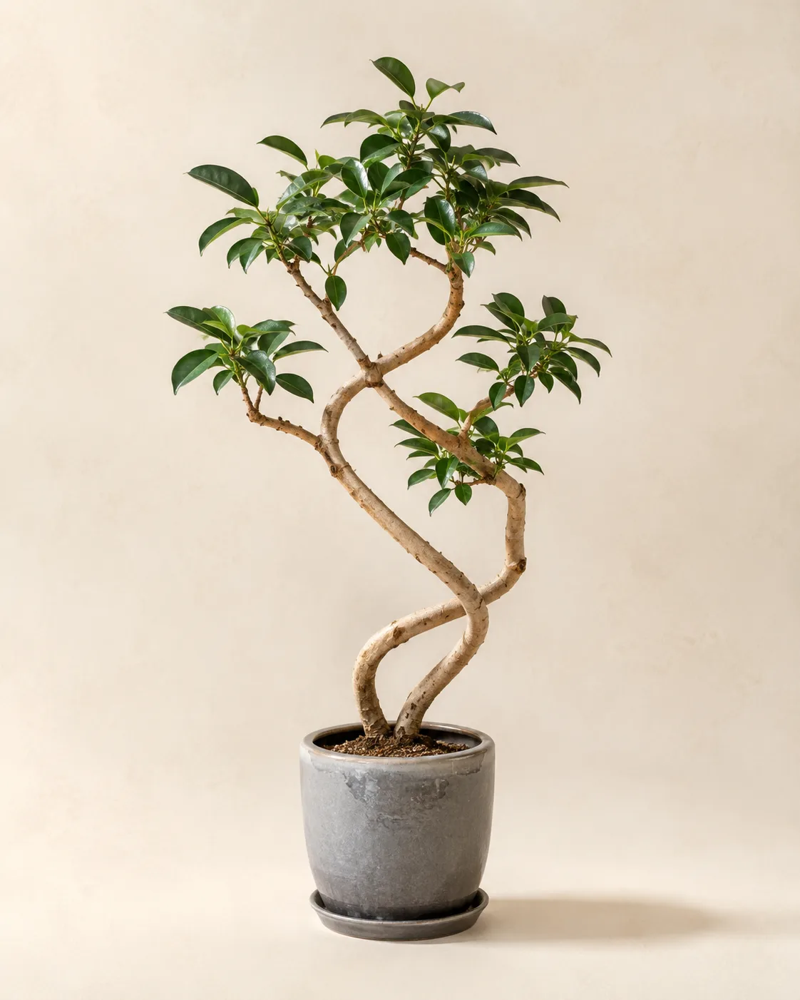
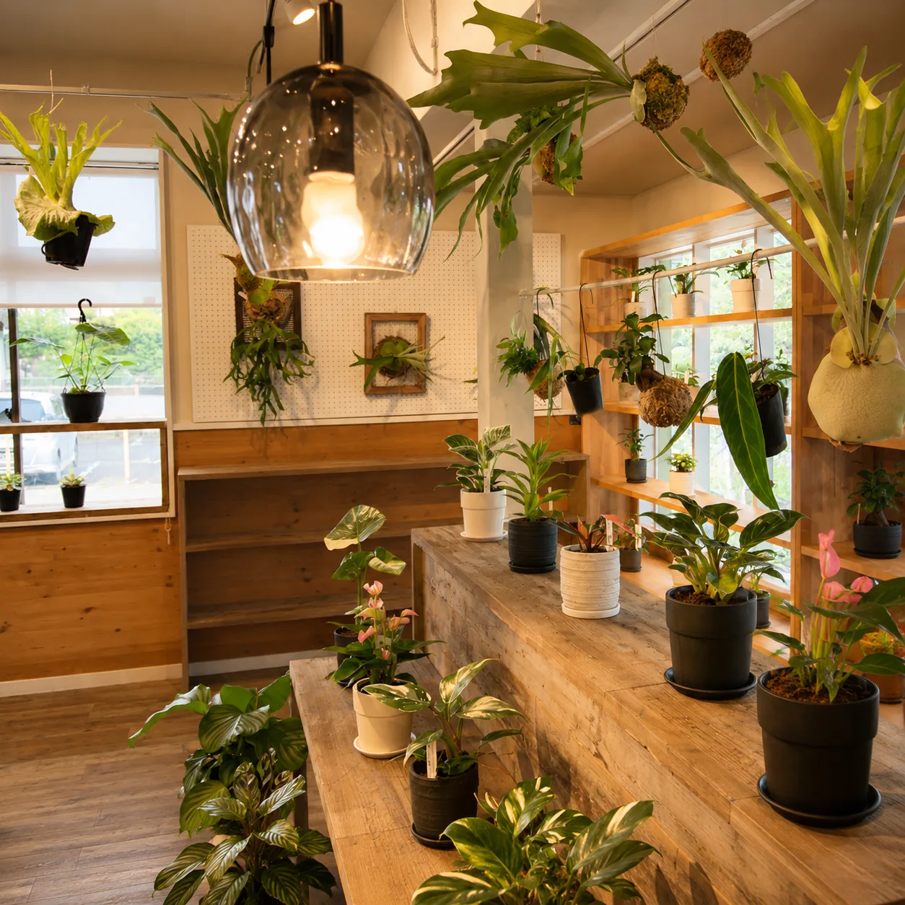

初心者におすすめの観葉植物5選｜枯らしにくい種類と最初の置き場所

観葉植物を始めてみたいけれど、すぐ枯らしてしまいそうで迷っていませんか。この記事では、初心者におすすめの枯らしにくい観葉植物5種類と、最初の置き場所・水やりのコツを、熊本の夏の西日や冬の冷え込みもふまえてまとめました。
初心者が枯らしにくい観葉植物の条件は？
「すぐ枯らしてしまいそう」という不安は、植物の種類選びでかなり小さくできます。枯らしにくい植物には、だいたい次の3つの共通点があります。
- 水やりを少し忘れても、すぐには弱らない
- 窓から少し離れた場所でも、ある程度は耐えてくれる
- 虫や病気がつきにくく、変化に気づきやすい
反対に、初心者のうちは避けたほうが安心なのは、湿度を高く保つ必要がある種類や、根がとても細かく水の加減が難しい種類です。見た目にひと目ぼれしたら、それも楽しみのひとつですが、最初の一鉢は「多少水やりが遅れても傷みにくい」ものを選ぶと、育てる楽しさを先に味わえます。
初心者におすすめの観葉植物5選はどれ？
ここでは、丈夫さと手入れのしやすさを基準に5つを選びました。いずれも、観葉植物を初めて育てる方に向くと言われることの多い種類です。
1. ゴムの木
厚みのあるつやつやした葉が特徴で、乾燥にも比較的強い木です。明るい場所を好みますが、レースカーテン越しの光でしっかり育ちます。葉が大きいので、ほこりがたまったら水でぬらした布でふき取ると、葉のつやが戻り、光も受けやすくなります。葉が落ちたときの見分け方はゴムの木の育て方でまとめています。
2. ガジュマル
ぷっくりとした幹が個性的で、小さな鉢でも存在感があります。日当たりと風通しのよい場所を好み、乾いたらたっぷり水をあげる、というリズムがつかみやすい植物です。卓上サイズから始めやすいのも、初心者に向いている理由です。寒さにはやや弱いので、冬は窓辺から少し離して育てます。

3. モンステラ
切れ込みの入った大きな葉で、一鉢あるだけで部屋の雰囲気が変わります。多少の水切れには耐えてくれますが、暖かい時期はぐんぐん伸びるので、置く場所に余裕を見ておくと安心です。リビングの主役になる大きめの一鉢を探している方に向いています。
4. ポトス
つるが伸びて垂れ下がる姿がかわいらしく、棚の上やハンギングにも向いています。観葉植物の中では比較的暗めの場所にも耐えやすく、伸びすぎたつるを切って水にさしておくと根が出ることもあり、増やす楽しみも味わえます。
5. サンスベリア
剣のようにまっすぐ伸びる葉を持ち、葉に水分をためておけるため、とても乾燥に強い植物です。水やりの回数が少なくてすむので、忙しい方や出張の多い方にも向いています。ただし寒さには弱めなので、冬の置き場所だけは気をつけます。水やりを忘れがちな方とも相性のよい植物です。
迷ったときの選び分け
5種類のどれにするか迷ったら、置きたい場所と暮らし方から考えると決めやすくなります。
- 窓辺の明るい場所に置ける：ゴムの木、ガジュマル
- 窓から少し離れた場所や棚の上：ポトス、サンスベリア
- 床に置ける広さがあり、大きく育てたい：モンステラ、ゴムの木
- 水やりの回数をできるだけ減らしたい：サンスベリア
- 卓上に小さく置きたい：ガジュマル、ポトス
犬や猫がいるご家庭は、後半の「買うときに見ておきたいポイント」の注意もあわせて確かめてください。
置き場所はどう決める？熊本の家で気をつけたいこと
植物を買う前に、置きたい場所の明るさを確かめておくと失敗が減ります。ゴムの木とガジュマルはレースカーテン越しの窓辺、モンステラは窓から少し離れた明るい場所、ポトスとサンスベリアは窓から離れた場所でもある程度耐えやすい、というのがひとつの目安です。日中に照明をつけないと手元が暗く感じる場所は、どの種類にとっても光が足りないことが多いので、窓辺に近づけるか、植物用のライトで補います。
熊本で暮らしていて気をつけたいのは、季節ごとの3つの場面です。
- 夏の西日：西向きの窓辺は午後に温度が上がりやすく、葉焼けの原因になります。真夏だけ窓から少し離すと安心です
- 梅雨の蒸れ：雨の多い時期は土が乾きにくくなります。風が通る場所に置き、水やりは土の乾きを見てからにします
- 冬の明け方の冷え：晴れた日の朝は窓辺が思った以上に冷えます。夜は窓から離し、部屋の中ほどへ移すのがおすすめです
エアコンや暖房の風が直接当たる場所は、季節を問わず避けたい場所です。葉の水分が奪われ、先から茶色くなることがあります。

水やりはいつ、どのくらい？
初心者がいちばん迷うのが水やりです。「何日に1回」と決めるより、土の乾き具合で判断するほうが失敗しません。
- 指を土に2〜3センチほど差し込み、乾いているか確かめる
- 乾いていたら、鉢底から水が流れ出るまでたっぷり与える
- 受け皿にたまった水は捨てる
春から秋の育つ時期は、土の乾きが早いのでこまめに確かめます。冬は成長がゆっくりになるため、土と株の様子を見ながら回数を減らします。暖房の効いた部屋では思ったより早く乾くこともあるので、日数ではなく土で判断するのが基本です。サンスベリアは葉に水分をためておけるので、冬は土が乾いてもしばらく様子を見るくらい、かなり控えめで構いません。
鉢底に穴のない鉢カバーに入れている場合は、水やりのたびに中の鉢を取り出し、水を切ってから戻すと根腐れを防げます。
枯らしてしまう原因として多いのは、水不足よりも水のあげすぎです。心配でつい少しずつ毎日あげると、鉢の中がずっと湿ったままになり、根が傷みやすくなります。冬の管理は冬の観葉植物の育て方でもくわしく紹介しています。
元気がないときはどう見分ける？
植物は、調子が悪くなると葉や土に少しずつサインを出します。早めに気づけば、たいていは置き場所や水やりを見直すだけで持ち直します。
- 葉がしおれて、土もカラカラ：水不足のサインです。鉢底から流れ出るまでたっぷり水をあげます
- 葉がしおれているのに、土はずっと湿っている：水のあげすぎで根が弱っている可能性があります。しばらく水を止め、風通しのよい場所で土を乾かします。1〜2週間たっても戻らない、土からにおいがする場合は、鉢から抜いて黒く柔らかい根がないか確かめ、気になるときは購入したお店に相談すると安心です
- 葉の一部が茶色く変色したり、白っぽく色が抜けたりした：強い日差しによる葉焼けのことが多いです。窓から少し離すか、レースカーテンを一枚はさみます
- 茎がひょろひょろと間延びする：光が足りていないサインです。もう少し明るい場所へ移します
- 下の葉が1〜2枚黄色くなる：古い葉が入れ替わっているだけのこともあります。新しい葉が元気に出ていれば、あまり心配いりません
慌てて肥料をあげたり、何度も置き場所を変えたりすると、かえって植物の負担になることがあります。原因をひとつずつ確かめ、変えるのは一度にひとつだけにするのがコツです。
買うときに見ておきたいポイントは？
同じ種類でも、株の状態で育てやすさは変わります。お店で選ぶときは、次の点を見ておくと安心です。
- 新しい葉が出ていて、葉の色にツヤがあるか
- 葉の裏や付け根に虫やベタつきがないか
- 幹や茎がぐらつかず、しっかりしているか
- 土がカビていたり、においがしたりしないか
買う時期は、気温が安定している春か秋が育てやすいと言われます。冬に迎える場合は、持ち帰るときに冷たい風に当てないよう、袋や紙で包んでもらうとよいでしょう。
小さな子どもや犬・猫がいるご家庭では、置き場所にも気を配りたいところです。ポトスやモンステラなどのサトイモ科の植物、ゴムの木・ガジュマルの樹液、サンスベリアには、ペットや人がかじると刺激になる成分が含まれると言われています。今回の5種類はどれも、かじられない工夫が必要だと考えておきましょう。猫は高い場所にも上がれるので、高さだけでなく、植物を置く部屋を分けるなどの工夫も検討してください。
まとめ
初心者の最初の一鉢は、ゴムの木・ガジュマル・モンステラ・ポトス・サンスベリアのような、丈夫で変化に気づきやすい種類から選ぶのがおすすめです。
- 置く場所の明るさを先に確かめる
- 夏の西日、梅雨の蒸れ、冬の明け方の冷えに気をつける
- 水やりは土の乾きを見てから、たっぷりと
HYGGEでは、お部屋の明るさや置きたい場所をうかがいながら、一鉢選びのお手伝いをしています。その時期に並んでいる植物の中から合うものを一緒に探せるので、「この場所に置けるかな」と迷ったら、気軽にご相談ください。
よくある質問
- 観葉植物は日当たりの悪い部屋でも育てられますか？
- ポトスやサンスベリアなどは比較的暗めの場所にも耐えますが、まったく光が入らない部屋では長く元気を保つのは難しくなります。週に何度か明るい場所へ移す、植物用のライトを使うなど、光を補う工夫をしてみてください。
- 旅行で数日家を空けても大丈夫ですか？
- 出かける前に土を確かめ、乾いていればたっぷり水をあげておけば、今回の5種類は数日程度の留守で枯れることは少ないとされています。土がまだ湿っているなら、無理にあげる必要はありません。夏は直射日光の当たらない涼しい場所へ移し、冬は窓辺から離しておくと安心です。
- 肥料はあげたほうがいいですか？
- 育つ時期の春から秋に、観葉植物用の肥料を商品の表示どおりに与えるのが一般的です。冬や植え替え直後、弱っているときは与えないようにします。最初のうちは、肥料より水やりと置き場所を整えるほうが大切です。
- 買ってきた鉢のまま育ててもいいですか？
- しばらくはそのままで問題ないことが多いです。鉢底から根が出てきた、水がしみ込みにくくなったなどのサインが出たら、春か秋にひと回り大きな鉢へ植え替えを考えてみてください。
HYGGE（ヒュッゲ）のお店
観葉植物と北欧雑貨のお店です。実物を見て選びたい方は、お気軽にお立ち寄りください。
熊本市南区幸田1丁目7-15／11:00〜17:00（水・土定休）／駐車スペースあり